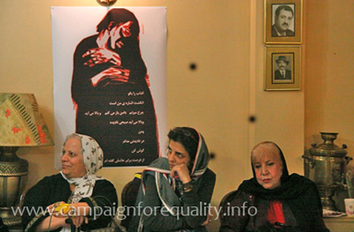
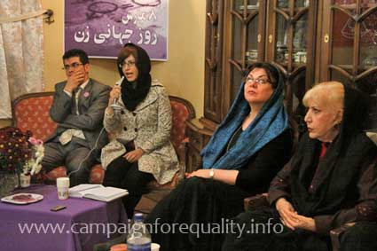
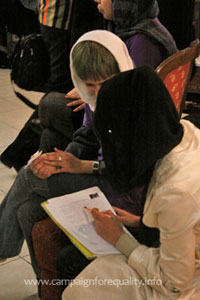

|
|

شبی با شاعران و نویسندگان در گرامیداشت روز جهانی زن
دنیای بی تهاجم و تحقیرم آرزوست
گزارش تصویری: آیدا سعادت و نسیم خسروی
شنبه24 اسفند 1387
تغییر برای برابری: هشت مارس امسال همزمان با فعالیت های خیابانی از جمله پخش بروشور و دفترچه های کمپین و استیکر و پوشیدن تی شرت هایی با علامت فمین در تهران و شهرستان ها، اعضای کمپین در شهرها و گروه های خود نیز برنامه هاي مجزایی ترتيب داده بودند . به رغم مشکلات و محدودیت های فضایی که بسیاری از فعالان جنبش های اجتماعی را با محدودیت استفاده از اماکن عمومی - که به عموم شهروندان اختصاص دارد- روبه رو کرده است شاعرانی که این روز را ارج می نهند به دعوت کمیته هنری کمپین مهمان یکی از اعضای کمپین در منزل مسکونی وی بودند. حضورشان دلگرم کننده ما در ادامه مبارزات مسالمت آمیزمان برای ارتقای موقعیت حقوقی زنان بود.

در 9 مارس، يعني يك روز پس از روز جهانی زن، جمع کثیری از هنرمندان و شاعران این روز را گرامی داشتند و به اين بهانه اشعارشان را در باره این روز ومسائل زنان برای حاضران خواندند. پویا عزیزی شاعر و ازاعضای کمپین مجری این برنامه بود كه با معرفی کمپین به هنرمندان و شاعران حاضر برنامه را آغاز کرد. این برنامه با سخنرانی پگاه احمدی در خصوص ادبیات زنان و شعر زنانه آغاز و پس از آن با شعر خوانی شاعران حاضر ادامه يافت، در اين برنامه همچنين تعدادي از اعضا كمپين نيزبه یاد عالیه اقدام دوست و روناک صفارزاده اشعار خود را به زندانیان برابری خواه تقدیم کردند.
سیمین بهبهانی، مریم حسین زاده، علی شاه مولوی، ری را عباسی، کبوتر ارشدی، مریم خونساری، علی قنبری، علیرضا مجابی، مهرنوش قربانعلی، پگاه احمدی ، آزاده زارعیان ، مژده دقیقی، ثنا نصاری، الهام ملک پور ، ناهید سرشکی، هوشیار انصاری فر، سولماز نراقی ، سارا خلیلی، وحید آقاجانی، اقبال مظفری، فاطمه حسن پور، شبنم آذر، پویا عزیزی، علیرضا بهنام، نسیم خسروی، مونا محمد زاده، شهاب الدین شیخی و بهناز شکاریار از هنرمندان، شاعران، نویسندگان و مترجمانی بودند که در شب شعر کمپین یک میلیون امضا به مناسبت روز جهانی زن حضور داشتند. آنان از آزادی و صلح و زنان آزادیخواه ، اعتراض تاریخی زنان نسبت به نظم موجود، خشونت های قانونی چون سنگسار، نقد تصویرجامعه مردسالار از زن، جنگ، زندان، اعدام، روزمره گی ومسخ ...سرودند.
"ای دل غمین برخیز کن ثنای آزادی
تا زنی همی جولان در فضای آزادی
هان غمین نباید بود در کشاکش دوران
خون دل بباید داد در بهای آزادی"
پگاه احمدی، با خواندن این ابیات از مهتاج رخشان از زنان پیشگام شعر مشروطه، شب شعر را آغاز کرد. او با اظهار امیدواری برای به سامان رسیدن مطالبات زنان و ظهور برابری در تمام عرصه های نابرابر، رویکردهای فمینیستی در ادبیات ایران و جهان را در مقاله ای باعنوان "بازنگاشت زن نویسنده در تاریخ" مورد نقد و بررسی قرار داد.
سیمین بهبهانی بانوی شعر ایران ضمن اشاره به روز جهانی زن و توجه به موقعیت زنان در جامعه ایران اعتراض به یکی از انواع خشونت های قانونی و سنتی یعنی سنگسار را که به نظم شعری خود در آورده بود برای حاضران قرائت کرد. وبدین ترتیب قطعه سنگسار سروده سیمین آغازگر شعرخوانی شب شعر بود :
سنگسار
نوبت اقرار زن تا چار شد
حکم دین از رجم او ناچار شد
این گره را دست حاکم باز کرد
راز پنهان فاش در بازار شد
مومنان را شرع اول زد صلا
سینه ها شان مشرق الانوار شد
این یکی بربام شد آن بر درخت
سنگ و لعنت محض دین ایثار شد
کم کمک در دست ها نیرو نماند
شوق اندک خستگی بسیار شد
زن هنوزش نیمه جانی مانده بود
خواستارش هفت جان شد هار شد
تخته سیمانی فراز آورد و سخت
برسرش کوبید و ختم کار شد
گفتم از امداد غیبی دان که دین
با زمان همرنگ و هم رفتار شد
عصر سیمان است و عصر سنگ نیست
سنگسار البته سیمان سار شد
مریم حسین زاده
مادرم حوا
سلام مادر مادربزرگ مادر مادرانم
من دختر دختر دخترانت هستم
ایرانیم و از اهالی خراسانم
اما حوا جان سرزمین من جای عچیب و غریبی است
اینجا مادرانی که دخترت را به دنیا می آورند
به خاطر تکرار خویش عزا می گیرند
و پسرانت تا پشت و پشته شان گرم بماند از ما پسر می خواهند
اما من از اشتباه تو آغاز می شوم از دهانت از دست ها و دندان هایت
از سرخی وسوسه روی درخت سیب ات
و ممنوعیت تو تولد دوباره ی من می شود
اصلن اگر تو نبودی تمام زن های دنیا باید می رفتند و سماق می مکیدند
آن سیبی که تو تعارفمان کردی به اندازه همه کره زمین بزرگ است
و به اندازه همه دهان ها جای گاز زدن دارد
می دانی همیشه فکر می کنم روزی روزگاری به شهر ما پا بگذاری
و با شوهرت که تنها آدم روی زمین است خانه ای بگیری
برهنگی ات را چگونه می پوشانی
و آن همه موهای بلند و زیبا را زیر چند روسری از چشم و آسمان می پوشانی
و باز اگر اعتراض کنی تو را به جرم برهم زدن نظم عمومی و به خطر افتادن امنیت ملی زندانی کنند
و حتا با وثیقه ی بهشت هم آزاد نشوی چه خواهی کرد
پس من از اعتراض تو آغاز می شوم از به خطر افتادن حقوق و امنیتم
و سر هر چهارراه فریاد می زنم
که مادر من حوا با دست های من بود که میوه از شاخه چید
و با دهان من بود که طعم رهایی خود را چشید
پس زنده باد مادر من حوا و زنده باد امروز که با نام نامی من زن شد
علی شاه مولوی
علی شاه مولوی شاعر سه شعر از سروده های خود را برای حاضران خواند که هرکدام از این اشعار را به یکی از زنان صاحب نام کشورمان تقدیم کرده بود
تقدیم به خانم بهبهانی : عشق در قلمرو اقتدار هیچ کس نیست
الو الو الو خط اش مثل خودش همیشه بیدار است/ مدام مشغول است تلفن اش قلبش می تپد قلمش می تپد با قلبش / آرام نمی گذارندش کر می شود گوش ماموری که .../ نمی شود او را گرفت آهوی بادپایی که سر قرار می رسد همیشه به وقت رسیدن سیب/ در معرکه معاد قبل از مرگ سواری زلف درآمیخته عریان اسبی مغرور /از هر چه زن زار نزار خوار می گذرد/ خانم بی بی بانو/ خطی سرخ است در خلیفه ها خان ها خواجه ها/در سرزمینی که مرگ پایان رنج هاست هرگز تابوت عشق را بر شانه هایش نخواهی دید/او که مانداب های تیره ی پاییز را خیره می نگرد/ آبشارهای بهاری را با گام های جوانی می پرد هنوز/با خود تا کجا می برد آیا سنگریزه های تنهایی را با تی پای تفکر /عقاب مادری باهوش که بغض قناری تردی می شکند درگلوش/وقتی می خواند وطنم وطنم وطنم بیا بیا ببین که منم گل دمیده از کفنم /نرمه باد مست بهار بوسه می زند به تنم وطنم/وطنم اینطور که دیروز تو و امروز مرا را زیر و رو می کنند /توالی خاطره های تو و روح رویاهای من چه می شود /البته عادی نیست رابطه ی پنهان امروز من و دیروز تو /چنان که طبیعی نیست قرار پنهان پروانه ها و پرستوها/روی دیوار شکسته ی یاس ها نبش آشیانه ی فرریخته ی قمری ها/معلوم نیست مورچه ها زیر پاشنه ی خونی چنار پیر چه می کنند/منتظر نباش فردا روزنامه ها بنویسند بازگشت سالهای سیاه پوش در خاکستری غروب بی دلیل بوده است/چقدر استعاره استعاره استعاره/آنها که به استعاره پناه می برند با آرزوهایشان پیر می شوند/شفاف باید گفت مثل شما زنده باد آزادی
به یاد غزاله علیزاده
امروز هم در صفحه ی بدرود روزنامه ها /پدران فداکار مادران پاکدامن جوانان ناکام و کودکان معصوم بودند/شکوفه ها که برشاخه ها ستاره می شوند /کسی اجازه ندارد بپرسد فرق میان فرشته و فاحشه چیست/فحش می دهی چرا آرام باش تو عصبانی هستی/آخر تن دادگان به طلا تا دلدادگان به رویا/تو عصبانی هستی/فکر کن جنگل با جراحت آن درخت چه می کند /تبر بزند تنه ی او را که دار شد/تو عصبانی هستی /ببین قمری ها که بر بستر یاس ها مست می شوند /خواهران غمگین مان با سینه های بریده بر درختان سیب می شوند/آنان که آرزوهایشان را در نیمه ی تاریک ماه پنهان می کنند /و نقطه ی پایان بودنشان را خودشان می گذارند.
تقدیم به شیرین عبادی
اصلن عجیب نیست /این حق ما و سهم شما روی سینه ی تاریخ است/آخر ما هم مردمی هستیم اهل مدارا/
اما/یک میهن مادر یک دنیا دختر یک خانه خواهر/خواهش می کنم مواظب شاید/صلیب صلح سنگین است و راه طولانی /بعد از این دعای دست های ما و تحمل شانه های شریف شما /یادتان باشد کبوترانی که پشت پنجره های خانه ی شما لانه می سازند/با کلاغ هایی که روی کاج کثیف آن طرف خیابان آشیانه دارند آشنایند/و طوطی های ساکن آن کنار کلک نمی دانند که جنگ /میراث شوم به جامانده از جهالت قابیل است/وگرنه مدام تکرار می کردند صلح صلح صلح /می دانید خاطره ی خواهرتان ژاندارک رنگین کمان خواب هایم برای عدالت را آشفته می کند/حالا از رفتار ناروای این رسانه ی نارس که بگذریم/برای شادمانی کبوتر سفید روی شانه تان می گویم/باور کنید به خاطر همه برای همیشه می ماند /که افتخار فقط عضله بعلاوه ی آهن مساوی با طلا نیست /باقی را سپید بخوانید که خوب می دانید
کبوتر ارشدی
کبوتر ارشدی شاعر و روزنامه نگار در شروع سخنان خود تاکید داشت که در بخش پژوهش و به خصوص قضاوت شعر زنان به ویژه از دهه 60 به بعد تامل موشکافانه ای لازم است. به اعتقاد او بسیاری از زنان ما در عرصه ی مطبوعات کشورمان جایی برای ظهور نداشته اند درحالی که چه در گرفت و گیرهای سالهای 60 و حتا بعد از ظهور اصلاح طلبان زنانی بوده اند که نگاه اجتماعی شان در شعرشان بازتاب داشته است. او با بیان این نکته شعر خود را برای حاضران قرائت کرد:
زنا کرده اند این سنگ ها که بر سرم فرود می آیند
و عشق نگاهی مشتاق است که مثل گنجشگی در هوا می میرد
این سنگ ها را بردار
محصنه از روی خارها بگذر
سوی بیت المقدس
به نشان سپاسی ابدی لعنت قداستی
که لذت ما را به سنگ های خیابان فروخت
انت عمری بخوان و بر سر و سینه ام بوسه ای دوباره بزن
مهرنوش قربانعلی
مونالیزای دو
از همان لبخند شروع شد اشتباه
از قلم موهای خم شده روی بوم
از همان اشتباه حلقه های موهایم را کشیدی صاف
سه بعدی بودم
رودخانه ای که در من می گذشت تصادفی نبود
رویدادی که قابل تشریح باشد
دلخورم کمی از تابلو
کمی از شاهزاده های روسپی که دامنشان پیچ وتاب می خورد
از اسکارلت کمی که پیچ و تاب موهایش پنهان نیست
و بیشتر از این نمایشگاه که لبخندم را حراج کرده است
می گویند شکلی از صورت تو را دارم
خصوصی ام
با دیوارهای تک بعدی کنار نمی آیم
اگر کایتی که می خواستی تکمیل شده بود
به رگهایم برمی گشتم
کمی دلخورم از جنون خم شده بر بوم بر قلم مو
لطفن صورتی سه بعدی بکش
بیرون قاب قدم بزنیم کمی
افسانه عزب دفتر
تقویم روزها را می شمارد
تو خودت را
و من در کوپن ها شمرده می شوم
آغوش تو میدان جنگ است
حلق را تنگ تر کن
بازی جدی تر می شود
علیرضا بهنام
خواب ندارد این تکه از زمین / نداری
بند بند عمومی
هوا هوای وز وز
و اعصاب می خراشد عبور می کند از تو
تو نیستی و میله ها ما را از کمربند جدا می کند
تو اینجایی پشت اعصاب
میله ها و هواکش
این تکه از زمین پرتاب می شود
توی همان وزوزی که خواب نیست / ندارد
علی قنبری
علی قنبری با بیان خاطره ای از سال های دور شعرش را به احتسام مرفاوی تقدیم کرد، زنی که در 12 سالگی پدرش او را به مرد 60 ساله ای شوهر داده بود و ...در دهه 60 سنگسارشد، بخشی از شعر او در زیر آمده است:
سیاهی در سیاهی تا ما در هم فرو شدیم
با طرح گردنبند تو از آسانسور می رم پایین
بگو در شان چه کسی قتل عمومی ترین پاورقی های اغوش را که کم می کنی
بگو پرت شوم به کجاهات
کوله پشتی ات را که زمین می گذاری
رگ ها و گلویت را
تو را
که مسری است
...
پرفورمنس و اجرای شعر سولماز نراقی و اجرای موسیقی سنتی بخش دیگر برنامه بود که توجه مثبت و منفی بسیاری از حاضران وشاعران را برانگیخت.سولماز کوشیده بود با بهره گیری از ادبیات، موسیقی ، رقص و ... شعر خود را بسراید.
شهاب الدین شیخی شاعر و از اعضای کمپین
تو دیر رسیده ای من هیچ گاه نخواهم رسید
سیبی را که جدم جرأت خوردنش را از زنش گرفت
قبل از همه آنها بلعیده ام
این گونه از ازل تا به امروز در برزخ لعنت و رحمت
از حلق خویش آویزانم
مریم خونساری
آتش می شوم پروانه ات را
که فردا جفت می کند بالهایش را از جنوب
امشب بدهکار سدر
آتش می شوم سرنوشتت را که تو پاک می کنی با سپید پوش آخر
یکی مانده به گودال سخت
و امن یجیب تا کناره های سرخ
امشب یکی مانده به انتهای اقاقیم
یکی مانده به از خاطرم نرفت مانده ام
بی تکه های سرخ انار
خوابیده ام با قسمتی از نخواب پروانه ام
هش دار به دیوار همسایه ها بلند
و مرگ خنده ها در عروسکی
تا عروسکی که بر جنون تاب می خورد
چشم هایم را ببند
دست هایش را ببند
یکی مانده به این جراثقال
آوار کوچکی در اعماق چشم های تو
هوار می شود
شبنم آذر
انتظار این چشم ها به چه کار می آید
راه لنگان در تاریکی فرو می رود
شب در کوچه ها اطراق می کند
گربه ای آخرین لکه ی سفید ماه را لیس می زند
و برای ما چیز زیادی باقی نمانده است
چشم عادت می کند به تاریکی به نور
مسافران گرامی
لطفن برای رسیدن به آزادی
در ایستگاه ملت پیاده شوید
دروازه ی دولت تعطیل است
نسیم خسروی شاعر و از اعضای کمپین شعر خود را به عالیه اقدام دوست، روناک صفارزاده وزینب بایزیدی که در زندان به سر می برند تقدیم کرد:
می خواهم پاره کنم این خواب معطل را گریه نکن
گلهای ریز پرده نور را تقسیم کردند
امروز دوشنبه نه مرداد یک هزار و سیصد و ..
صبحانه می خورم
سر نمی بندم
چشم می بندم برای باز شدن در میدان های دور
باران گرفت
و مردها آستانه ی جنگل را بستند
گفتم قرار کاج و عشقه نداشتیم
خواب می بینی
تنها هجوم لکه های کلاغ بود
نمی بینی زیستن در باد/خط کشید از بالای سرم تا درشتی ماه/گفتی و نشد
تمشک تازه یا چای
گلهای پرده روز را برده بودند/گریه نکن
گفتم گریستن نمی دانی/می دانی
تنها برای انگشت هایم جشن گرفته ام
مونا محمد زاده شاعر و از اعضای کمپین نیز شعرش را به عالیه اقدام دوست تقدیم کرد
برای روزهای رفته افسوسی نیست
افسونی است
چرا که تو را روزها ثبت خواهند کرد
برای افسانه هایی که تاریخ رقم اش زد
شمع ها شعله کش زمانی است تلخ
تو شاد باش
در پس دریاها آفتابی ست سرخ
که نوید روزهایی برابر از عشق است
رهایی آن بازی بی رفوزه بود که تک آوردیم
ما کوچه ها را سبزه می کاریم
یادوار لحظه های سرد زندانت
و درختانی که از تن ات روییدند آویخته ی غرور
آن گاه که سر برافراشتی بر نور شهر خویش
اینجا زمین آبستن دنیای بهتر است
ما دستهایمان
آغوش کودکان است آنگاه که جهان را ممکن آزادگی کنیم
رستنگاه بهاری وطن

آزاده زارعیان
به نام خودم که می خندم
به هر آنچه خونم را می خورد بسته
بارگهای برآمده باز
به درخت های کنار
که از باد رو برگردانده اند
و نخل های گردن کلفت که بادبزن شمشادهای غمگین شدند
اصلن به گور پدرم که پر از فضله ی گنجشک ها قاب عکس زرد اش را کلاغ ها دزدیده اند
به جاده ی جهان که این همه در خود پیچیده
تا خنده های مرا به خانه ام ختم کند
به خواهرم که پایش را کج بر می دارد و قشنگ راه می رود
به مادرم که روبنده اش را به باد داد و تن اش را به آب
به این همه داد و بیداد
بلند بلند می خندم
از خاک ناز که برخیزم
ابری را زیر سر می گذارم
آسمان را از روی دریا کنار می زنم
و روی آب می خندم
ناهید سرشکی
زبانی دارم مار پله ای بلند
بی آن که دندان هایم هنوز
فک های کوسه را قرض گرفته باشند
هر روز می نشیند این رو به رو
با گیس های پریشان زنی
که با من نسبت دارد
و مانده وامانده در پیچ های بازی
که جایش از چه هر روز عوض می شود
از آن پیچ به پیچی دیگر
نردبام ها را جمع کرده ام
گذاشته ام کنار بام که بیایی
سارا خلیلی
می فشاری توی دست هایت
زمان غرق می شود
در جریان شیری رنگ
تشنه ام نیست
نارنجک ها بی قرار سرک می کشند
از گریبان اش
در کمین دستان میوه چین
الهام ملک پور شاعر و از اعضای کمپین
اشتراک مساعی
ما سعی می کنیم هیچ اتفاقی نیفتد
ما سعی می کنیم هیچ بمبی ساخته نشود
ما عمیقا امیدواریم پرچم ها به رنگ خودشان آشفته شوند
ما ماییم که در تلاشیم
تابناکی در دست های ما به معجزه می خندد
و از راه های فرعی به بزرگراه نقب می زنیم
ما تروریستیم
و در جلگه ها سرود عربی بر پاست
ما همیشه تروریستیم
ما سعی می کنیم هیچ اتفاقی نیفتد
تصمیم می گیریم و به خانه بر می گردیم
ما حتمن به خانه بر می گردیم
در این شکی نیست
هر روز یک شعر خوب باید خواند
هر روز یک موسیقی باید شنید
هر روز یک نقاشی خوب باید دید
هر روز یک فیلم ساخته می شود
من فیلم خودم را دارم
شب ها تا صبح بی کار نمی نیشینم
این رسالت من است
هر روز هر روز هر روز
از بام افتادن
و در گورهای دسته جمعی مجتمع شدن
به حواشی مردانه یاری رساندن
و نزول ابرهای پی در پی
چشم های شما خسته می شود
کودکان من خسته می شود
اسب های سفید کوچولو خسته می شود
قطع نامه ها و میزها خسته می شوند
خودنویس
بعضی وقت ها می زنم توی خودم
و سعی می کنم بمانم و رکیک شوم
گور پدر بچه های من
صبح های جمعه مراسم تدفین است
من فیلم خودم را دارم
هر روز باید یک فیلم خوب دید
سعی می کنم با تمام آدم ها تکه پاره شوم
سعی می کنم در تمام عملیات استشهادی شهید شوم
سعی می کنم روده ی بزرگم کوچک اش را بخورد
سعی می کنم در هر لحظه به من تجاوز شود
سعی می کنم در هر لحظه مادرم را بکشم
من تروریستم و این مساله ای نیست
من فیلم خودم را دارم
بهناز شکاریار از اعضای کمپین
در خیابان غوغای زندگی
شبها روی بام فریاد مرگ
کوچه ها آسفالت شده
خودمونیم حیف شده
آنجا کنج آن کوچه
خانه ای جا مانده
دالان دالان پنجدری
شاخه های مو تکیه برپلکان آهنی
سبز , سرسبزتر از همیشه
تیرماه تابستان درگیری
در خیابان غوغائی است
فریادی
جوانی پرتاب شد
از پنجره ای به بیرون
فریاد
فریاد شکستن کاسۀ خود پسندی بود
خانۀ جا مانده
درهایش باز
نرمترین مکان آرامش
دل نرم صاحبخانه
حسن ختام شب شعر، امضای بیانیه ی کمپین توسط شاعرانی بود که در روز جهانی زن همبستگی خود را با كنشگران كمپين يك ميليون يك امضا به این طریق اعلام کردند:
